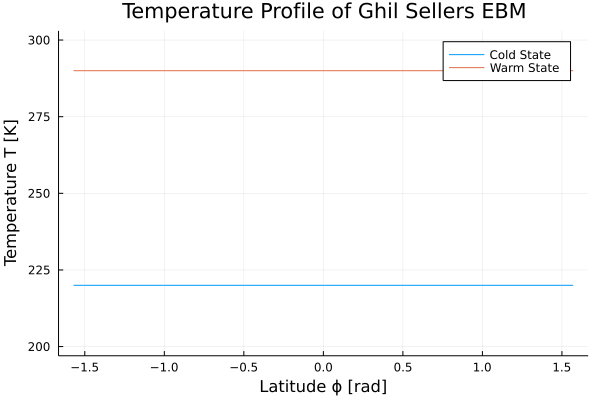

GhilSellersEBM
Documentation for GhilSellersEBM.
This package provides an implementation of the Ghil Sellers 1D Energy Balance Model. It is based on three publications:
- Sellers: "A Global Climatic Model Based on the Energy Balance of the Earth-Atmosphere System", 1969
- Ghil: "Climate Stability for a Sellers-Type Model", 1976
- Bodai et al: "Global instability in the Ghil-Sellers model", 2014
Example Use
Solving the model with two initial conditions: one leading to cold and one to a warm state.
using GhilSellersEBM, DifferentialEquations, Plots
x = (-90.:5.:90.)./90.
grid = Grid(x)
p = ContinousGhilSellersParameters(grid);
tspan = (0.,1e9)
prob = ODEProblem(ghilsellers_ebm!, 220*ones(p.g.N), tspan, p)
sol_1 = solve(prob)
sol_2 = solve(remake(prob, u0=290*ones(p.g.N)))
t_plot = range(tspan[1],tspan[2],length=200)
anim = @animate for it ∈ t_plot
plot(p.ϕ, sol_1(it), xlabel="Latitude ϕ [rad]", label="Cold State", ylims=[210,300], ylabel="Temperature T [K]", title="Temperature Profile of Ghil Sellers EBM")
plot!(p.ϕ, sol_2(it), label="Warm State", ylims=[200,300])
end
gif(anim, "ebm-anim.gif", fps=10)